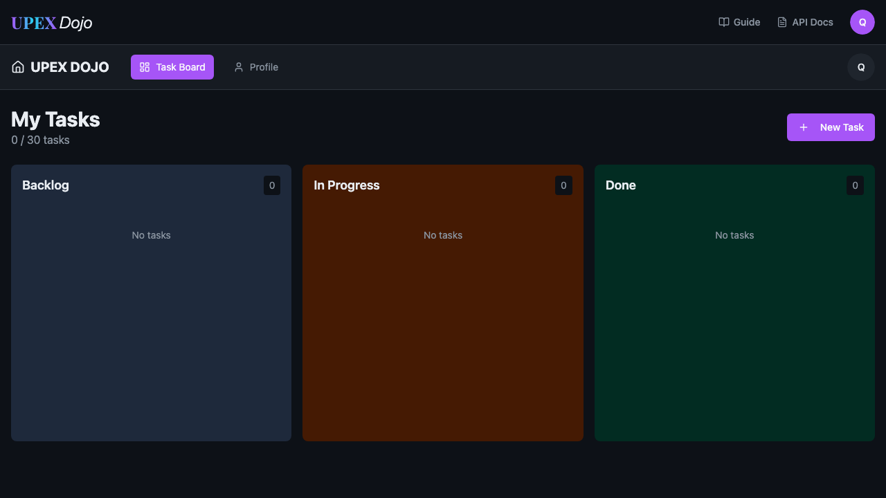

Scan application state
axe-core evaluates the rendered application against the configured automated accessibility policy.
Capability 03
Automated WCAG-oriented accessibility quality gates using Playwright and axe-core across both public and authenticated application states.
Engineering responsibility
Accessibility validation is expected to fail when the application violates the configured policy. The goal is not to manufacture an all-green history but to produce trustworthy quality signals.
axe-core evaluates the rendered application against the configured automated accessibility policy.
Detected violations remain actionable test output rather than being silently downgraded or suppressed.
The zero-violation expectation fails when the application does not satisfy the configured automated policy.
Detection 01
The public-page scan detected insufficient contrast on the Register navigation element.
.bg-primary > spanDetection 02
The authenticated dashboard independently reproduced the same contrast issue on the active Task Board navigation element.
a[data-testid="nav-task-board"]
Coverage model
The accessibility layer reuses deterministic authenticated state so automated scans can evaluate application areas that are not reachable anonymously.
Root-cause classification
The diagnostic process distinguishes whether a failed quality gate belongs to the product, framework, environment, infrastructure or an external dependency.
Accessibility assertion turns red.
Report and screenshots expose the violation.
Issue appears in two application states.
The scanner behaves as designed.
Product accessibility defect.
Evidence policy
The detected violations remain failures. No rule suppression, severity downgrade or showcase-only exclusion is introduced to make the report appear successful.
This capability demonstrates defect detection and diagnostic quality, not a manufactured all-green execution history.
Canonical source
The public repository contains the shared accessibility scanner and fixture integration used by the published framework architecture.
Real diagnostic evidence
The published report is a sanitized copy of the real accessibility execution. The detected failures are intentionally preserved.